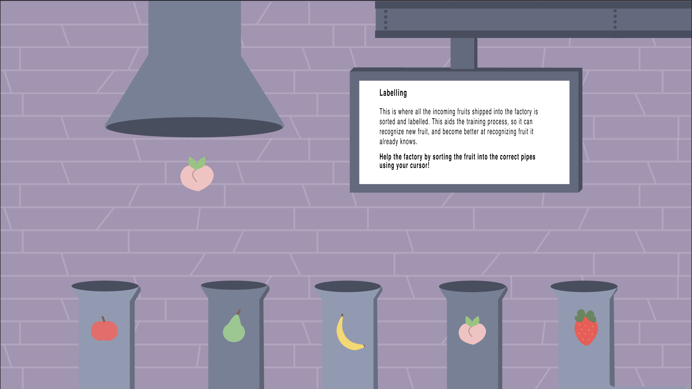
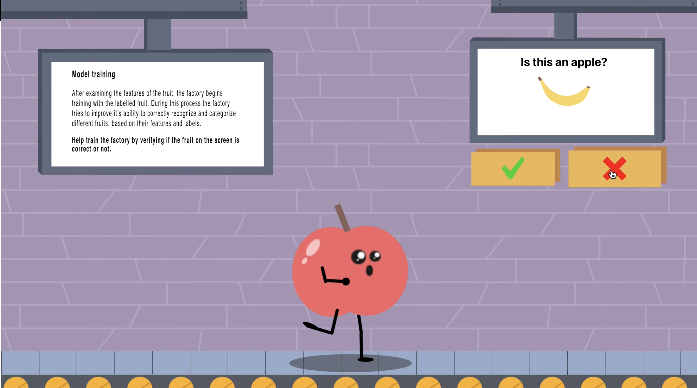

The Fruit Factory
"The Fruit Factory" is an interactive web application that teaches general audiences how AI image recognition models are trained, using scrollytelling, animations, and microgames built around a fruit factory metaphor.
Project Details / Background
The Fruit Factory is an interactive web application that teaches general audiences how AI image recognition models are trained, without requiring any prior technical knowledge. The project was born out of a recognition that AI is increasingly present in everyday life, yet the underlying processes remain opaque to most people. By making these processes transparent and engaging, the goal was to give users the tools to better understand the technology shaping their world.
The prototype uses scrollytelling as its primary format, breaking down the six stages of training an image recognition model into digestible, scroll-triggered sections. A fruit factory serves as the central metaphor throughout, drawing on the familiarity of everyday objects to ground abstract concepts in something tangible and relatable. As users scroll through the factory, they encounter four microgames covering labeling, feature extraction, model training, and deployment, each designed to let users actively participate in the process rather than passively read about it.
The application was built in ReactJS and went through multiple rounds of user testing, including hallway tests, usability evaluations, and knowledge retention assessments. Findings showed that participants who engaged with the interactive elements were significantly better at recalling the steps of image recognition, and that the fruit metaphor helped make an intimidating subject feel approachable. The project contributes to the growing field of AI transparency and public education, showing that good design can make even the most complex topics genuinely accessible.
Image Gallery

Labeling microgame
Model training micro game